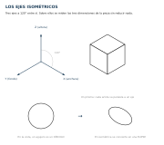

Contenido
Perspectiva isométrica
Las vistas sirven para fabricar, pero cuesta imaginarse la pieza mirándolas. La perspectiva isométrica la enseña entera de un golpe, y es la que acompaña a las vistas en casi cualquier plano.
Los tres ejes
Se dibuja sobre tres ejes separados 120° entre sí: uno vertical para la altura y dos a 30° sobre la horizontal para la anchura y el fondo. Sobre esos ejes las medidas se llevan sin reducir, tal cual.

Los círculos se vuelven elipses
Un agujero redondo no se dibuja redondo en isométrica: se ve como una elipse inclinada según la cara en la que esté. Es el detalle que más delata un dibujo hecho deprisa.
De las vistas a la perspectiva
El método que menos falla:
- Dibuja la caja que envuelve la pieza, con sus tres medidas generales sobre los ejes.
- Quita de esa caja lo que sobra, apoyándote en las vistas.
- Coloca los detalles —taladros, chaflanes— midiendo siempre sobre las aristas, nunca a ojo.

Lámina 3 · Perspectiva isométrica
Dibuja tu pieza en isométrica a partir de tus vistas de la lámina 2. La lámina lleva una retícula suave de apoyo: úsala para mantener los ángulos.
Con esta lámina ya tienes las tres. Sube las tres a la tarea Láminas de dibujo —escaneadas o fotografiadas de frente y con buena luz— y ahora sí, pulsa «Entregar».
Lista desordenada
Ordena los pasos para dibujar una pieza en isométrica.
- Trazar los tres ejes a 120° entre sí
- Dibujar la caja que envuelve la pieza con sus tres medidas generales
- Quitar de la caja el material que sobra, mirando las vistas
- Colocar los detalles midiendo sobre las aristas
- Repasar el contorno definitivo y borrar las líneas de construcción